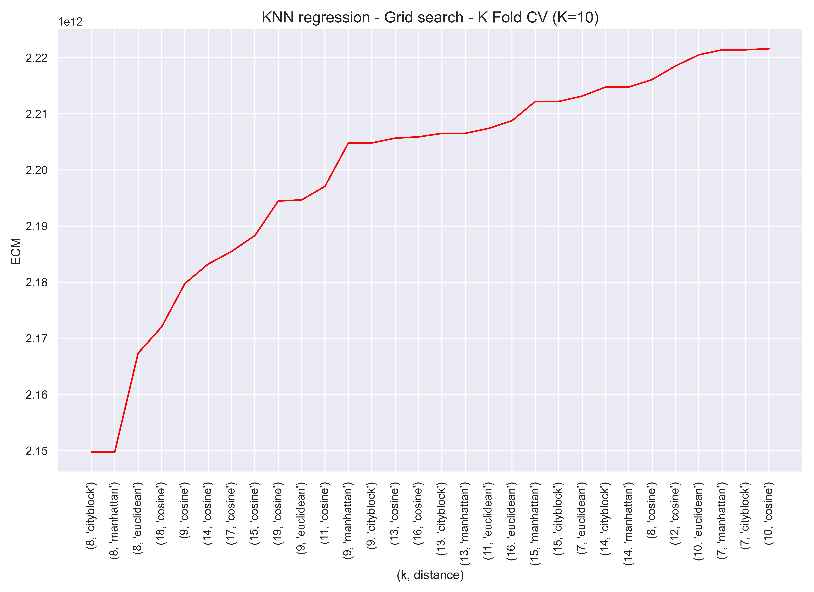
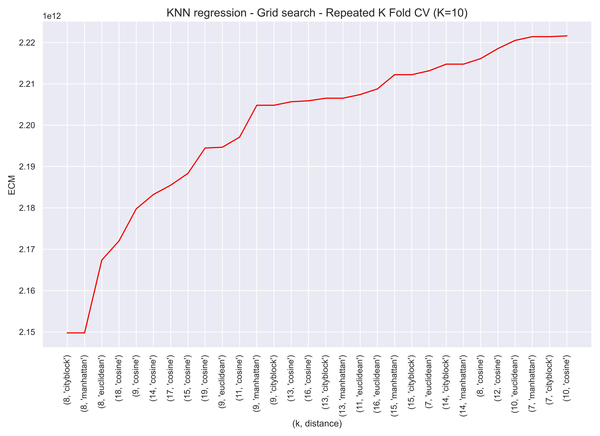
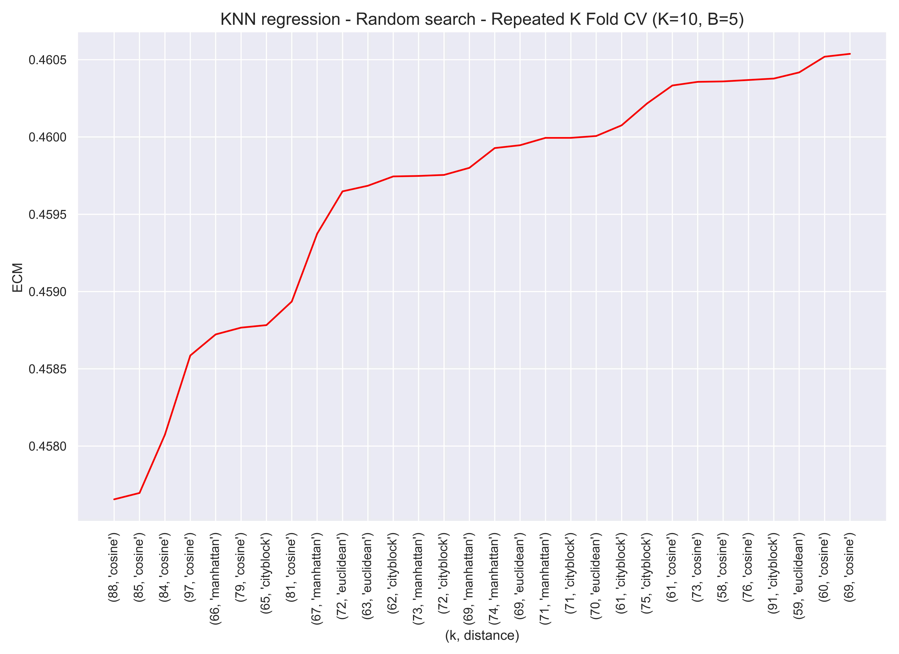
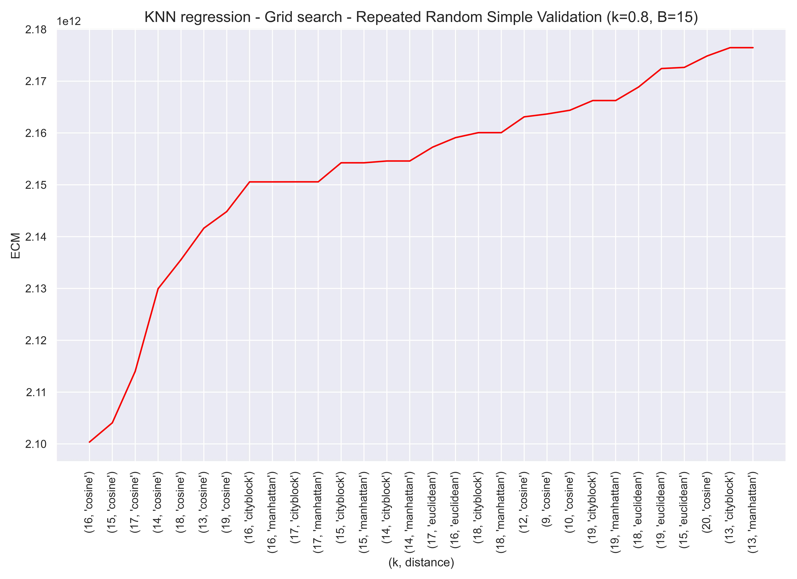
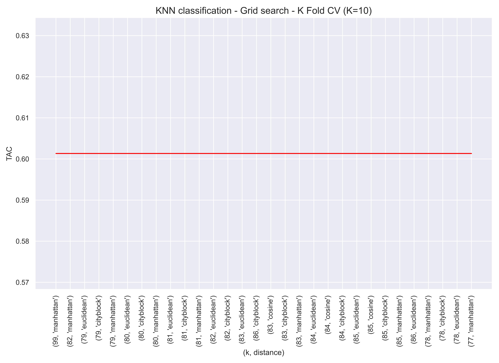
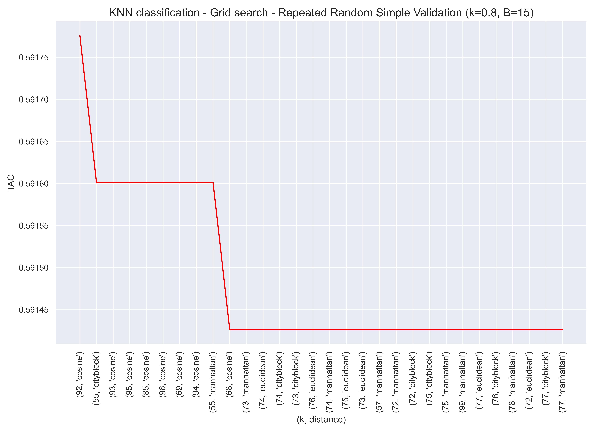
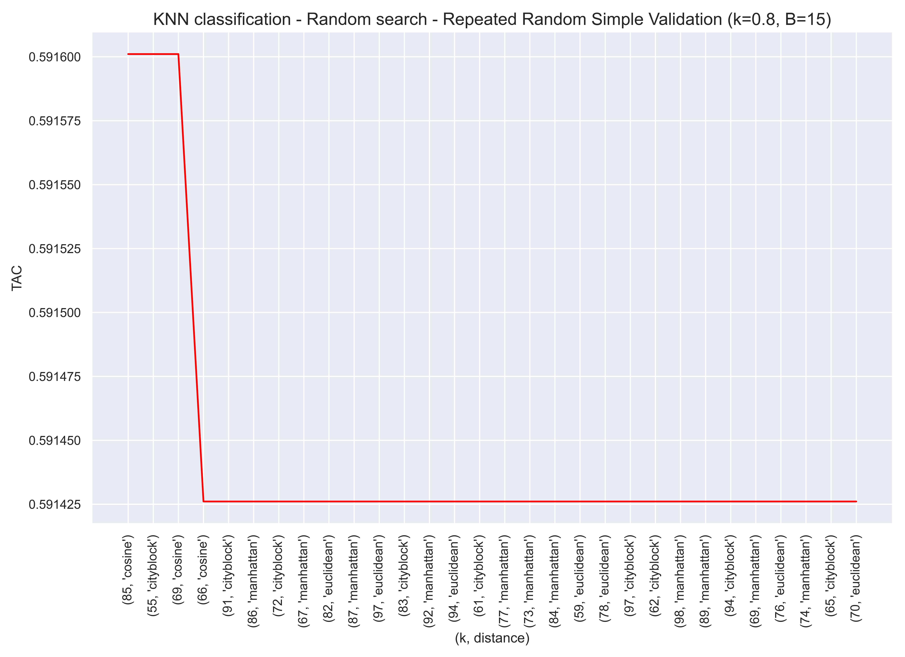

Chapter 3 Grid Search - Random Search programados en Python
Importamos las librerías que vamos a utilizar en esta sección:
import pandas as pd
import numpy as np
import math
import sklearn
import itertools
from sklearn.utils import resample
from sklearn.neighbors import NearestNeighbors
import seaborn as sns
import matplotlib.pyplot as plt
sns.set_theme()Cargamos los datos con los que vamos a trabajar:
Data = pd.read_csv('House_Price_Regression.csv')
Data = Data.loc[:, ['latitude', 'longitude', 'no_of_bathrooms', 'no_of_bedrooms', 'price', 'size_in_m_2', 'balcony_recode', 'private_garden_recode', 'quality_recode']]
Data.head()| latitude | longitude | no_of_bathrooms | no_of_bedrooms | price | size_in_m_2 | balcony_recode | private_garden_recode | quality_recode | |
|---|---|---|---|---|---|---|---|---|---|
| 0 | 25.113208 | 55.138932 | 2 | 1 | 2700000 | 100.242337 | 1.0 | 0.0 | 2.0 |
| 1 | 25.106809 | 55.151201 | 2 | 2 | 2850000 | 146.972546 | 1.0 | 0.0 | 2.0 |
| 2 | 25.063302 | 55.137728 | 5 | 3 | 1150000 | 181.253753 | 1.0 | 0.0 | 2.0 |
| 3 | 25.227295 | 55.341761 | 3 | 2 | 2850000 | 187.664060 | 1.0 | 0.0 | 1.0 |
| 4 | 25.114275 | 55.139764 | 1 | 0 | 1729200 | 47.101821 | 0.0 | 0.0 | 2.0 |
3.1 Algoritmos de validación
Cargamos los algoritmos de validación de los que se nutrirá nuestro algoritmo de ajuste de hiperparámetros.
Estos algoritmos fueron tratados con detalle en el artículo sobre algoritmos de validación para modelos de aprendizaje supervisado.
class RandomSimpleValidation :
# D --> have to be a pandas data frame.
# k --> is the proportion of observation of D that define D_train.
# response --> have to be a string with the name of the response variable.
# model --> object containing the initialized model to use.
# The function has been created thinking that the model to be used will be one from the `sklearn` library.
# metric --> It's the name of the validation metric.
# random_seed --> seed to replicate the random process.
def __init__(self, k, metric, model, random_seed):
self.k = k
self.metric = metric
self.model = model
self.random_seed = random_seed
def fit(self, D, response_name):
N = len(D)
self.D_train = D.sample(frac=self.k, replace=False, random_state=self.random_seed)
self.D_test = D.drop( self.D_train.index , )
self.X_train = self.D_train.loc[: , self.D_train.columns != response_name]
self.Y_train = self.D_train.loc[: , response_name]
self.X_test = self.D_test.loc[: , self.D_test.columns != response_name]
self.Y_test = self.D_test.loc[: , response_name]
self.model.fit(self.X_train, self.Y_train)
def predict(self):
self.Y_predict_test = self.model.predict(self.X_test)
def compute_metric(self):
if self.metric == 'ECM':
self.ECM_test = np.mean((self.Y_predict_test - self.Y_test) ** 2)
return self.ECM_test
elif self.metric == 'TAC':
self.TAC_test = np.mean((self.Y_predict_test == self.Y_test))
return self.TAC_testclass RepeatedRandomSimpleValidation :
# D --> It have to be a pandas data frame.
# B --> It's the number of iterations of the Random Simple Validation algorithm.
# k --> It's the proportion of observation of D that define D_train.
# response --> It have to be a string with the name of the response variable.
# model --> It's an object containing the initialized model to use.
# The function has been created thinking that the model to be used will be one from the `sklearn` library.
# metric --> It's the name of the validation metric.
# random_seed --> It's the seed to replicate the random process
def __init__(self, B, k, metric, model, random_seed):
self.B = B
self.k = k
self.metric = metric
self.model = model
self.random_seed = random_seed
def fit(self, D, response_name):
self.D = D
self.response_name = response_name
np.random.seed(self.random_seed)
self.seed_array = np.random.randint(9999999, size=(self.B))
def compute_metric(self):
Metric_test_list = [ ]
for b in range(0,self.B) :
RandomSimpleValidation_init = RandomSimpleValidation(k=self.k, metric=self.metric, model=self.model, random_seed=self.seed_array[b])
RandomSimpleValidation_init.fit(D=self.D, response_name=self.response_name)
RandomSimpleValidation_init.predict()
Metric_test_list.append( RandomSimpleValidation_init.compute_metric() )
self.Metric_test = np.mean(Metric_test_list)
return self.Metric_testclass KFoldCV:
# D --> It have to be a pandas data frame.
# K --> It's the number of folds of K-fold algorithm..
# response_name --> It have to be a string with the name of the response variable.
# model --> It's an object containing the initialized model to use.
# The function has been created thinking that the model to be used will be one from the `sklearn` library.
# metric --> It's the name of the validation metric.
# random_seed --> It's the seed to replicate the random process.
def __init__(self, D, K, response_name, random_seed, metric, model):
self.D = D
self.K = K
self.response_name = response_name
self.random_seed = random_seed
self.metric = metric
self.model = model
self.ECM_K_FOLDS_vector = []
self.TA_K_FOLDS_vector = []
self.df_sample = None
def __resample_df(self):
np.random.seed(self.random_seed)
sample = resample(range(0, len(self.D)), n_samples=len(self.D), replace=False)
self.df_sample = pd.DataFrame({'index': range(0,len(self.D)) , 'sample':sample})
def __get_quantiles(self):
Q = []
for q in np.arange(0 , 1 + 1/self.K , 1/self.K):
Q.append( np.quantile( range(0, len(self.D)) , q ).round(0) )
return Q
def __train_test_split(self, q, Q):
X_test = self.D.loc[self.df_sample.loc[Q[q]:(math.floor(Q[q+1])-1), 'sample'] , self.D.columns != self.response_name ]
Y_test = self.D.loc[self.df_sample.loc[Q[q]:(math.floor(Q[q+1])-1), 'sample'] , self.D.columns == self.response_name ]
X_train = self.D.loc[ : , self.D.columns != self.response_name ].drop(self.df_sample.loc[Q[q]:(math.floor(Q[q+1])-1), 'sample'] )
Y_train = self.D.loc[ : , self.D.columns == self.response_name ].drop(self.df_sample.loc[Q[q]:(math.floor(Q[q+1])-1), 'sample'])
Y_test = Y_test.to_numpy()
return X_test, Y_test, X_train, Y_train
def fit(self):
self.__resample_df()
Q = self.__get_quantiles()
for j in range(0, len(Q)-1):
X_test, Y_test, X_train, Y_train = self.__train_test_split(j, Q)
self.model.fit(X_train, Y_train)
Y_predict_test = self.model.predict(X_test)
if self.metric == 'ECM':
self.ECM_K_FOLDS_vector.append(np.mean((Y_predict_test - Y_test)**2))
elif self.metric == 'TAC':
self.TA_K_FOLDS_vector.append(np.mean((Y_predict_test == Y_test)))
def get_metric(self):
if self.metric == 'ECM':
return np.mean(self.ECM_K_FOLDS_vector)
elif self.metric == 'TAC':
return np.mean(self.TA_K_FOLDS_vector)class RepeatedKFoldCV:
# D --> It have to be a pandas data frame.
# B --> It's the number of iterations of the K-Fold algorithm.
# K --> It's the number of folds of K-fold algorithm..
# response_name --> It have to be a string with the name of the response variable.
# model --> It's an object containing the initialized model to use.
# The function has been created thinking that the model to be used will be one from the `sklearn` library.
# metric --> It's the name of the validation metric.
# random_seed --> It's the seed to replicate the random process.
def __init__(self, B, K, random_seed, metric, model):
self.B = B
self.K = K
self.random_seed = random_seed
self.metric = metric
self.model = model
def fit(self, D, response_name):
self.Metric_Repeted_K_Folds_list = [ ]
np.random.seed(self.random_seed)
for b in range(0, self.B):
KFoldCV_init = KFoldCV(D=D, K=self.K, response_name=response_name, random_seed=123, metric=self.metric, model=self.model)
KFoldCV_init.fit()
self.Metric_Repeted_K_Folds_list.append( KFoldCV_init.get_metric() )
def get_metric(self):
return np.mean(self.Metric_Repeted_K_Folds_list)3.2 Grid Search - Random Search
Vamos a programar el algoritmo Grid Search, tanto su versión determinista como su versión random.
La clase con la que se ha programado tiene los siguientes parámetros:
Data: conjunto de datos de interés. \(\\[0.3cm]\)
Response_name: nombre de la variable respuesta. \(\\[0.3cm]\)
model: nombre del modelo que se va a utilizar. En esta versión, por simplicidad, solo se ha considerado el modelo KNN, por ello los nombres disponibles son ‘knn_regression’ y ‘knn_classification’. \(\\[0.3cm]\)
search_space: es el espacio de búsqueda para los hiper-parámetros del modelo. \(\\[0.3cm]\)
validation: es el nombre del algoritmo de validación que va a utilizar el algoritmo Grid Search. En esta versión hay dos posibles algoritmos de validación disponibles, validación simple aleatoria repetida y repeated K-fold. Los nombres disponibles son ‘repeated_random_simple_validation’ y ‘repeated_K_Fold_CV’. \(\\[0.3cm]\)
metric: es el nombre de la métrica de validación que usará el algoritmo. En esta versión, por simplicidad, solo se han considerado dos, el error cuadrático medio para modelos de regresión y la tasa de acierto para modelos de clasificación supervisada. Los nombres dispobles son ‘ECM’ y ‘TAC’. \(\\[0.3cm]\)
B y k: son parámetros asociados a la función repeated_random_simple_validation. B es el número de repeticiones y k la proporcion de observaciones de train. Para ver más detalles sobre la función repeated_random_simple_validation, se recomienda, una vez más, leer el artículo sobre algoritmos de validación para modelos de aprendizaje supervisado. \(\\[0.3cm]\)
random_seed: es la semilla aleatoria de la funcion repeated_random_simple_validation. \(\\[0.3cm]\)
random_search: es un parámetro que toma como valores ‘True’ o ‘False’. Si es ‘True’ el algoritmo implementado es Random Search, si es ‘False’ es Grid Search determinista. \(\\[0.3cm]\)
random_state: es la semilla aleatoria de Random Search. \(\\[0.3cm]\)
n_random_samples: es el número de vectores de valores posibles de los hiper-parametros que se van a considerar en Random Search. \(\\[0.3cm]\)
La clase devuelve un data-frame con las distintas combinaciones de hiper-parámetros que han sido evaluadas, y los valores de la métrica de validación que han sido obtenidos para cada una de esas combinaciones. \(\\[0.3cm]\)
La clase con la que se ha programado el algoritmo Grid Search es la siguiente:
class GridSearch:
def __init__(self, model, search_space, metric, random_search=False, n_random_samples=None, random_state = None):
self.model = model
self.search_space = search_space
self.metric = metric
self.random_search = random_search
self.random_state = random_state
self.n_random_samples = n_random_samples
def fit_KFoldCV(self, Data, response_name, K, random_seed):
self.Data = Data
self.response_name = response_name
self.K = K
self.random_seed = random_seed
self.hyperparameter_combinations = list(itertools.product(self.search_space[0], self.search_space[1]))
self.grid_search_metric_list = []
if self.random_search:
self.hyperparameter_combinations = resample(self.hyperparameter_combinations, n_samples=self.n_random_samples, replace=False, random_state=self.random_state)
else: pass
if self.model == 'knn_regression' :
for h in self.hyperparameter_combinations:
knn_regression_init = sklearn.neighbors.KNeighborsRegressor(n_neighbors=h[0], metric=h[1])
KFoldCV_init = KFoldCV(D=self.Data, K=self.K, response_name=self.response_name,
random_seed=self.random_seed, metric=self.metric, model=knn_regression_init)
KFoldCV_init.fit()
self.grid_search_metric_list.append(KFoldCV_init.get_metric())
elif self.model == 'knn_classification' :
for h in self.hyperparameter_combinations:
knn_classification_init = sklearn.neighbors.KNeighborsClassifier(n_neighbors=h[0], metric=h[1])
KFoldCV_init = KFoldCV(D=self.Data, K=self.K, response_name=self.response_name,
random_seed=self.random_seed, metric=self.metric, model=knn_classification_init)
KFoldCV_init.fit()
self.grid_search_metric_list.append(KFoldCV_init.get_metric())
def fit_RepeatedRandomSimpleValidation(self, Data, response_name, k, B, random_seed):
self.Data = Data
self.response_name = response_name
self.k = k
self.B = B
self.random_seed = random_seed
self.hyperparameter_combinations = list(itertools.product(self.search_space[0], self.search_space[1]))
self.grid_search_metric_list = []
if self.random_search:
self.hyperparameter_combinations = resample(self.hyperparameter_combinations, n_samples=self.n_random_samples, replace=False, random_state=self.random_state)
else:
pass
if self.model == 'knn_regression' :
for h in self.hyperparameter_combinations:
knn_regression_init = sklearn.neighbors.KNeighborsRegressor(n_neighbors=h[0], metric=h[1])
RepeatedRandomSimpleValidation_init = RepeatedRandomSimpleValidation(B=self.B, k=self.k, metric=self.metric,
model=knn_regression_init, random_seed=self.random_seed)
RepeatedRandomSimpleValidation_init.fit(D=self.Data, response_name=self.response_name)
self.grid_search_metric_list.append(RepeatedRandomSimpleValidation_init.compute_metric())
elif self.model == 'knn_classification' :
for h in self.hyperparameter_combinations:
knn_classification_init = sklearn.neighbors.KNeighborsClassifier(n_neighbors=h[0], metric=h[1])
RepeatedRandomSimpleValidation_init = RepeatedRandomSimpleValidation(B=self.B, k=self.k, metric=self.metric,
model=knn_classification_init, random_seed=self.random_seed)
RepeatedRandomSimpleValidation_init.fit(D=self.Data, response_name=self.response_name)
self.grid_search_metric_list.append(RepeatedRandomSimpleValidation_init.compute_metric())
def fit_RepeatedKFoldCV(self, Data, response_name, K, B, random_seed):
self.Data = Data
self.response_name = response_name
self.K = K
self.B = B
self.random_seed = random_seed
self.hyperparameter_combinations = list(itertools.product(self.search_space[0], self.search_space[1]))
self.grid_search_metric_list = []
if self.random_search:
self.hyperparameter_combinations = resample(self.hyperparameter_combinations, n_samples=self.n_random_samples,
replace=False, random_state=self.random_state)
else:
pass
if self.model == 'knn_regression' :
for h in self.hyperparameter_combinations:
knn_regression_init = sklearn.neighbors.KNeighborsRegressor(n_neighbors=h[0], metric=h[1])
RepeatedKFoldCV_init = RepeatedKFoldCV(B=self.B, K=self.K, metric=self.metric,
model=knn_regression_init, random_seed=self.random_seed)
RepeatedKFoldCV_init.fit(D=self.Data, response_name=self.response_name)
self.grid_search_metric_list.append(RepeatedKFoldCV_init.get_metric())
elif self.model == 'knn_classification' :
for h in self.hyperparameter_combinations:
knn_classification_init = sklearn.neighbors.KNeighborsClassifier(n_neighbors=h[0], metric=h[1])
RepeatedKFoldCV_init = RepeatedKFoldCV(B=self.B, K=self.K, metric=self.metric,
model=knn_classification_init, random_seed=self.random_seed)
RepeatedKFoldCV_init.fit(D=self.Data, response_name=self.response_name)
self.grid_search_metric_list.append(RepeatedKFoldCV_init.get_metric())
def get_df_grid_search(self) :
self.df_grid_search = pd.DataFrame({'(k, distance)': self.hyperparameter_combinations, self.metric: self.grid_search_metric_list})
if self.metric == 'ECM':
self.df_grid_search = self.df_grid_search.sort_values(by=self.metric, ascending=True)
elif self.metric == 'TAC':
self.df_grid_search = self.df_grid_search.sort_values(by=self.metric, ascending=False)
return self.df_grid_searchA continuación vamos a probar el algoritmo usando el algoritmo KNN como referencia, tanto como algoritmo de clasificación como de regresión.
Usaremos el siguiente mismo espacio de búsqueda.
search_space = [range(1,100) , ['euclidean','cosine','cityblock','manhattan']]3.2.1 Grid Search K-Fold Regression
Grid Search aplicado a KNN para regresión, usando el algoritmo K-Fold, con K=10, y la métrica de validación ECM.
GridSearch_init = GridSearch( model='knn_regression', search_space=search_space, metric='ECM')GridSearch_init.fit_KFoldCV(Data=Data, response_name='price', K=10, random_seed=123) # time: 1.23 minGridSearch_10Fold_regression = GridSearch_init.get_df_grid_search()GridSearch_10Fold_regression| (k, distance) | ECM | |
|---|---|---|
| 30 | (8, cityblock) | 2.149765e+12 |
| 31 | (8, manhattan) | 2.149765e+12 |
| 28 | (8, euclidean) | 2.167357e+12 |
| 69 | (18, cosine) | 2.172008e+12 |
| 33 | (9, cosine) | 2.179763e+12 |
| … | … | … |
| 391 | (98, manhattan) | 4.028750e+12 |
| 388 | (98, euclidean) | 4.032013e+12 |
| 394 | (99, cityblock) | 4.048032e+12 |
| 395 | (99, manhattan) | 4.048032e+12 |
| 392 | (99, euclidean) | 4.049301e+12 |
396 rows × 2 columns
3.2.2 Random Search K-Fold Regression
Random Search aplicado a KNN para regresión, usando el algoritmo K-Fold, con K=10, y la métrica de validación ECM.
RandomSearch_init = GridSearch( model='knn_regression', search_space=search_space, metric='ECM', random_search=True, n_random_samples=150, random_state=123)RandomSearch_init.fit_KFoldCV(Data=Data, response_name='price', K=10, random_seed=123) # time: 25.8 segRandomSearch_10Fold_regression = RandomSearch_init.get_df_grid_search()
RandomSearch_10Fold_regression| (k, distance) | ECM | |
|---|---|---|
| 60 | (8, manhattan) | 2.149765e+12 |
| 107 | (8, cityblock) | 2.149765e+12 |
| 13 | (9, cosine) | 2.179763e+12 |
| 138 | (14, cosine) | 2.183241e+12 |
| 18 | (11, cosine) | 2.197101e+12 |
| … | … | … |
| 36 | (97, euclidean) | 4.016359e+12 |
| 53 | (98, manhattan) | 4.028750e+12 |
| 134 | (99, cityblock) | 4.048032e+12 |
| 130 | (99, manhattan) | 4.048032e+12 |
| 146 | (99, euclidean) | 4.049301e+12 |
150 rows × 2 columns
3.2.3 Grid Search K-Fold Classification
Grid Search aplicado a KNN para clasificación, usando el algoritmo K-Fold, con K=10, y la métrica de validación TAC.
GridSearch_init = GridSearch( model='knn_classification', search_space=search_space, metric='TAC')GridSearch_init.fit_KFoldCV(Data=Data, response_name='quality_recode', K=10, random_seed=123) # time: 1.24 minGridSearch_10Fold_classification = GridSearch_init.get_df_grid_search()GridSearch_10Fold_classification| (k, distance) | TAC | |
|---|---|---|
| 395 | (99, manhattan) | 0.601334 |
| 327 | (82, manhattan) | 0.601334 |
| 312 | (79, euclidean) | 0.601334 |
| 314 | (79, cityblock) | 0.601334 |
| 315 | (79, manhattan) | 0.601334 |
| … | … | … |
| 1 | (1, cosine) | 0.450322 |
| 5 | (2, cosine) | 0.381866 |
| 7 | (2, manhattan) | 0.375512 |
| 6 | (2, cityblock) | 0.375512 |
| 4 | (2, euclidean) | 0.375330 |
396 rows × 2 columns
3.2.4 Random Search K-Fold Classification
Random Search aplicado a KNN para clasificación, usando el algoritmo K-Fold, con K=10, y la métrica de validación TAC.
RandomSearch_init = GridSearch( model='knn_classification', search_space=search_space, metric='TAC', random_search=True, random_state=123)RandomSearch_init.fit_KFoldCV(Data=Data, response_name='quality_recode', K=10, random_seed=123) # time: 54 segRandomSearch_10Fold_classification = RandomSearch_init.get_df_grid_search()
RandomSearch_10Fold_classification| (k, distance) | TAC | |
|---|---|---|
| 112 | (72, cityblock) | 0.601334 |
| 122 | (76, manhattan) | 0.601334 |
| 117 | (71, cityblock) | 0.601334 |
| 27 | (73, manhattan) | 0.601334 |
| 113 | (85, cosine) | 0.601334 |
| … | … | … |
| 56 | (4, cosine) | 0.459897 |
| 103 | (4, euclidean) | 0.459007 |
| 94 | (1, euclidean) | 0.451028 |
| 121 | (2, cosine) | 0.381866 |
| 82 | (2, cityblock) | 0.375512 |
150 rows × 2 columns
3.2.5 Grid Search Repeated K-Fold Regression
Grid Search aplicado a KNN para regresión, usando el algoritmo Repeated K-Fold, con B=15 y K=10, y la métrica de validación ECM.
GridSearch_init = GridSearch(model='knn_regression', search_space=search_space, metric='ECM')GridSearch_init.fit_RepeatedKFoldCV(Data=Data, response_name='price', B=5, K=10, random_seed=123) # time: 5.32 minGridSearch_5_Repeated_10Fold_regression = GridSearch_init.get_df_grid_search()
GridSearch_5_Repeated_10Fold_regression| (k, distance) | ECM | |
|---|---|---|
| 30 | (8, cityblock) | 2.149765e+12 |
| 31 | (8, manhattan) | 2.149765e+12 |
| 28 | (8, euclidean) | 2.167357e+12 |
| 69 | (18, cosine) | 2.172008e+12 |
| 33 | (9, cosine) | 2.179763e+12 |
| … | … | … |
| 391 | (98, manhattan) | 4.028750e+12 |
| 388 | (98, euclidean) | 4.032013e+12 |
| 394 | (99, cityblock) | 4.048032e+12 |
| 395 | (99, manhattan) | 4.048032e+12 |
| 392 | (99, euclidean) | 4.049301e+12 |
396 rows × 2 columns
3.2.6 Random Search Repeated K-Fold Regression
Random Search aplicado a KNN para regresión, usando el algoritmo Repeated K-Fold, con B=15 y K=10, y la métrica de validación ECM.
RandomSearch_init = GridSearch(model='knn_regression', search_space=search_space, metric='ECM', random_search=True, n_random_samples=150, random_state=123)RandomSearch_init.fit_RepeatedKFoldCV(Data=Data, response_name='quality_recode', B=5, K=10, random_seed=123) # time: 1.48 segRandomSearch_5_Repeated_10Fold_regression = RandomSearch_init.get_df_grid_search()
RandomSearch_5_Repeated_10Fold_regression| (k, distance) | ECM | |
|---|---|---|
| 145 | (88, cosine) | 0.457656 |
| 113 | (85, cosine) | 0.457697 |
| 21 | (84, cosine) | 0.458074 |
| 12 | (97, cosine) | 0.458586 |
| 5 | (66, manhattan) | 0.458723 |
| … | … | … |
| 19 | (3, cosine) | 0.574303 |
| 26 | (3, manhattan) | 0.579867 |
| 121 | (2, cosine) | 0.646198 |
| 82 | (2, cityblock) | 0.652763 |
| 94 | (1, euclidean) | 0.826616 |
150 rows × 2 columns
3.2.7 Grid Search Repeted K-Fold Classification
Grid Search aplicado a KNN para clasificación, usando el algoritmo Repeated K-Fold, con B=15 y K=10, y la métrica de validación TAC.
GridSearch_init = GridSearch(model='knn_classification', search_space=search_space, metric='TAC')GridSearch_init.fit_RepeatedKFoldCV(Data=Data, response_name='quality_recode', B=5, K=10, random_seed=123) # time: 7.52 minGridSearch_5_Repeated_10Fold_classification = GridSearch_init.get_df_grid_search()
GridSearch_5_Repeated_10Fold_classification| (k, distance) | TAC | |
|---|---|---|
| 395 | (99, manhattan) | 0.601334 |
| 327 | (82, manhattan) | 0.601334 |
| 312 | (79, euclidean) | 0.601334 |
| 314 | (79, cityblock) | 0.601334 |
| 315 | (79, manhattan) | 0.601334 |
| … | … | … |
| 1 | (1, cosine) | 0.450322 |
| 5 | (2, cosine) | 0.381866 |
| 7 | (2, manhattan) | 0.375512 |
| 6 | (2, cityblock) | 0.375512 |
| 4 | (2, euclidean) | 0.375330 |
396 rows × 2 columns
3.2.8 Random Search Repeated K-Fold Classification
Random Search aplicado a KNN para clasificación, usando el algoritmo Repeated K-Fold, con B=15 y K=10, y la métrica de validación TAC.
RandomSearch_init = GridSearch(model='knn_classification', search_space=search_space, metric='TAC', random_search=True, random_state=123)RandomSearch_init.fit_RepeatedKFoldCV(Data=Data, response_name='quality_recode', B=5, K=10, random_seed=123) # Time: 3.48 minRandomSearch_5_Repeated_10Fold_classification = RandomSearch_init.get_df_grid_search()
RandomSearch_5_Repeated_10Fold_classification| (k, distance) | TAC | |
|---|---|---|
| 395 | (92, cosine) | 0.601334 |
| 141 | (71, manhattan) | 0.601334 |
| 130 | (99, manhattan) | 0.601334 |
| 301 | (74, cityblock) | 0.601334 |
| 134 | (99, cityblock) | 0.601334 |
| … | … | … |
| 322 | (1, cosine) | 0.450322 |
| 121 | (2, cosine) | 0.381866 |
| 82 | (2, cityblock) | 0.375512 |
| 182 | (2, manhattan) | 0.375512 |
| 150 | (2, euclidean) | 0.375330 |
396 rows × 2 columns
3.2.9 Grid Search Repeated Random Simple Validation Regression
Grid Search aplicado a KNN para regresón, usando el algoritmo Repeated Random Simple Validation, con B=15 y K=10, y la métrica de validación ECM.
GridSearch_init = GridSearch(model='knn_regression', search_space=search_space, metric='ECM')GridSearch_init.fit_RepeatedRandomSimpleValidation(Data=Data, response_name='price', B=15, k=0.8, random_seed=123) # Time: 1.49 minGridSearch_Repeated_Random_Simple_Validation_regression = GridSearch_init.get_df_grid_search()
GridSearch_Repeated_Random_Simple_Validation_regression| (k, distance) | ECM | |
|---|---|---|
| 61 | (16, cosine) | 2.100355e+12 |
| 57 | (15, cosine) | 2.104077e+12 |
| 65 | (17, cosine) | 2.114013e+12 |
| 53 | (14, cosine) | 2.129950e+12 |
| 69 | (18, cosine) | 2.135545e+12 |
| … | … | … |
| 388 | (98, euclidean) | 3.707686e+12 |
| 1 | (1, cosine) | 3.716708e+12 |
| 394 | (99, cityblock) | 3.716987e+12 |
| 395 | (99, manhattan) | 3.716987e+12 |
| 392 | (99, euclidean) | 3.719429e+12 |
396 rows × 2 columns
3.2.10 Random Search Repeated Simple Validation Regression
Random Search aplicado a KNN para regresión, usando el algoritmo Repeated Random Simple Validation, con B=15 y K=10, y la métrica de validación ECM.
GridSearch_init = GridSearch(model='knn_regression', search_space=search_space, metric='ECM', random_search=True, random_state=123, n_random_samples=150)GridSearch_init.fit_RepeatedRandomSimpleValidation(Data=Data, response_name='price', B=15, k=0.8, random_seed=123) # Time: 38.6 segRandomSearch_Repeated_Simple_Validation_regression = GridSearch_init.get_df_grid_search()
RandomSearch_Repeated_Simple_Validation_regression| (k, distance) | ECM | |
|---|---|---|
| 138 | (14, cosine) | 2.129950e+12 |
| 62 | (15, manhattan) | 2.154248e+12 |
| 106 | (14, manhattan) | 2.154595e+12 |
| 6 | (14, cityblock) | 2.154595e+12 |
| 131 | (18, manhattan) | 2.160066e+12 |
| … | … | … |
| 36 | (97, euclidean) | 3.697234e+12 |
| 53 | (98, manhattan) | 3.705077e+12 |
| 134 | (99, cityblock) | 3.716987e+12 |
| 130 | (99, manhattan) | 3.716987e+12 |
| 146 | (99, euclidean) | 3.719429e+12 |
150 rows × 2 columns
3.2.11 Grid Search Repeated Simple Validation Classification
Grid Search aplicado a KNN para clasificación, usando el algoritmo Repeated Random Simple Validation, con B=15 y K=10, y la métrica de validación TAC.
GridSearch_init = GridSearch(model='knn_classification', search_space=search_space, metric='TAC')GridSearch_init.fit_RepeatedRandomSimpleValidation(Data=Data, response_name='quality_recode', B=15, k=0.8, random_seed=123) # Time: 3.30 minGridSearch_Repeated_Simple_Validation_classification = GridSearch_init.get_df_grid_search()
GridSearch_Repeated_Simple_Validation_classification| (k, distance) | TAC | |
|---|---|---|
| 365 | (92, cosine) | 0.591776 |
| 218 | (55, cityblock) | 0.591601 |
| 369 | (93, cosine) | 0.591601 |
| 377 | (95, cosine) | 0.591601 |
| 337 | (85, cosine) | 0.591601 |
| … | … | … |
| 12 | (4, euclidean) | 0.483990 |
| 5 | (2, cosine) | 0.427822 |
| 7 | (2, manhattan) | 0.414523 |
| 6 | (2, cityblock) | 0.414523 |
| 4 | (2, euclidean) | 0.401925 |
396 rows × 2 columns
3.2.12 Random Search Repeated Simple Validation Classification
Random Search aplicado a KNN para clasificación, usando el algoritmo Repeated Random Simple Validation, con B=15 y K=10, y la métrica de validación TAC.
GridSearch_init = GridSearch(model='knn_classification', search_space=search_space, metric='TAC', random_search=True, random_state=123, n_random_samples=150)GridSearch_init.fit_RepeatedRandomSimpleValidation(Data=Data, response_name='quality_recode', B=15, k=0.8, random_seed=123) # Time: 1.23 minRandomSearch_Repeated_Simple_Validation_classification = GridSearch_init.get_df_grid_search()
RandomSearch_Repeated_Simple_Validation_classification| (k, distance) | TAC | |
|---|---|---|
| 113 | (85, cosine) | 0.591601 |
| 51 | (55, cityblock) | 0.591601 |
| 96 | (69, cosine) | 0.591601 |
| 8 | (66, cosine) | 0.591426 |
| 91 | (91, cityblock) | 0.591426 |
| … | … | … |
| 26 | (3, manhattan) | 0.490114 |
| 24 | (4, manhattan) | 0.485389 |
| 103 | (4, euclidean) | 0.483990 |
| 121 | (2, cosine) | 0.427822 |
| 82 | (2, cityblock) | 0.414523 |
150 rows × 2 columns
3.3 Visualización de resultados
Vamos a mostrar el código que se ha usado solo para el primero de los gráficos, para no saturar de código el artículo.
El resto de gráficos se han construido adaptando este código al caso concreto en cuestión.
GridSearch_10Fold_regression['(k, distance)'] = GridSearch_10Fold_regression['(k, distance)'].astype('str')fig, ax = plt.subplots(figsize=(11,8))
p = sns.lineplot(y="ECM", x='(k, distance)' , data=GridSearch_10Fold_regression.iloc[0:30, :], color='red')
plt.setp(p.get_xticklabels(), rotation=90)
plt.title("KNN regression - Grid search - K Fold CV (K=10)", fontsize=15)
plt.tight_layout()
fig.savefig('p1.jpg', format='jpg', dpi=600)- Gráficos de los resultados obtenidos con las distintas variantes probadas del algoritmo Grid Search para el ajuste de los hiper-parámetros del modelo KNN para regresión:






Como puede verse, la combinación óptima de hiper-parámetros varía en función de la versión utilizada del algoritmo de ajuste de hiper-parámetros.
- Gráficos de los resultados obtenidos con las distintas variantes probadas del algoritmo Grid Search para el ajuste de los hiper-parámetros del modelo KNN para clasificación:





Como ocurría en el caso anterior, la combinación óptima de hiper-parámetros varía en función de la versión utilizada del algoritmo de ajuste de hiper-parámetros.